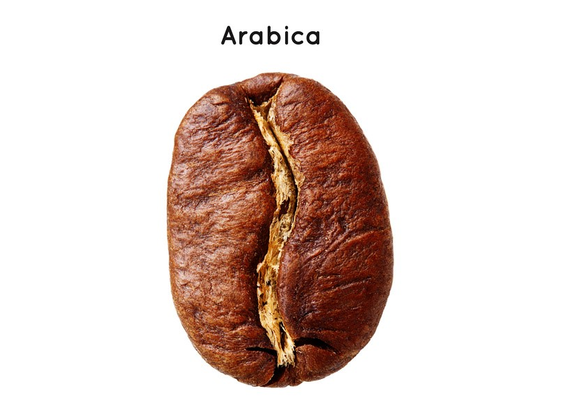

Species
There are over 100 coffee species in the world, however there are two main species that are widely sold and procuded. These two main species of coffee are: Arabica and Robusta.
Arabica Beans
Also know as Coffee Arabica. Thought to be the very first species of coffee to be cultivated, over 1,000 years ago.
It has:
- Less caffeine
- Less aciditiy
- More aromatic properties
- and are considered the more superior bean

Robusta Beans
Also known as Coffea Canephora. Originating in the Congo Basin, this species is widely grown in Arfica and Asia.
It has:
- A strong, full-body
- Distinctive earthy flavour
- More bitterness
- and is grown in a climate that is unsuitable for Arabica beans

From here on we will focus on the more popular, Arabica beans.